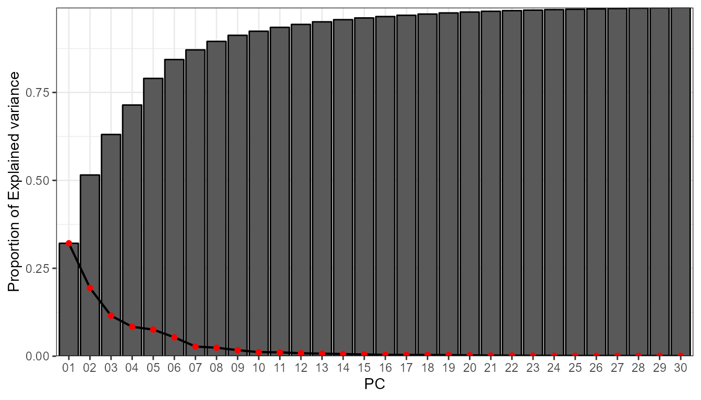
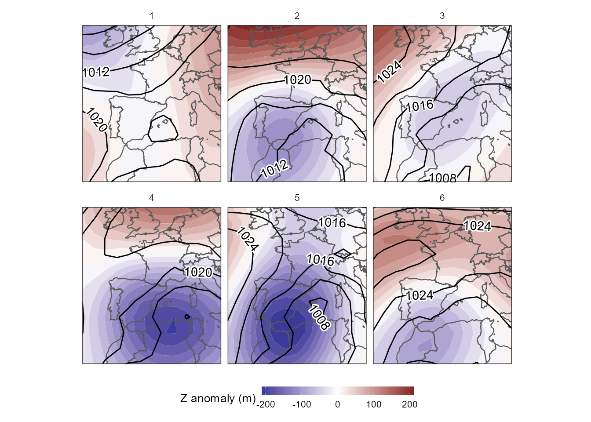
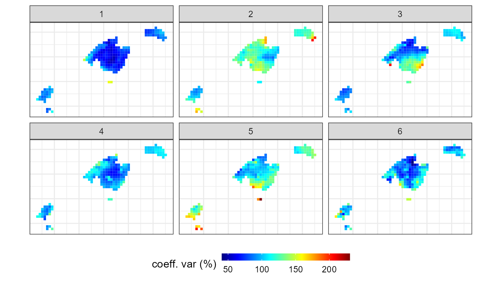

Environment-To-Circulation
Marc Lemus-Canovas
2023-11-02
Source:vignettes/environment-to-circulation.Rmd
environment-to-circulation.RmdIn this case we will develop a synoptic classification that goes from environment to circulation. A simple example would be to study the WT associated to daily rainfall equal or greater than 100 mm.
Introduction to the T-mode classification method
The structure of the matrix in T-mode establishes that
the variables are the days, and the observations are the grid points. In
this case, the PCA establishes the linear relationships between each
daily map of the atmospheric variable in order to extract the main WT.
The PCA associates directly those days more similar to each other to
group the WTs, so it is not necessary to use any clustering method.
synoptReg allows to perform three variants of the
T-mode based on:
Positive and negative (PN) correlations (loadings) of each of the days against each PC. Day 1 may be associated with PC X+ or PC X-, depending on whether the correlation is positive or negative. This last option, allows to obtain the double of classes of the selected components. If 4 PCs are selected, the final result can reach up to a maximum of 8 CTs.
Maximum positive correlations (MAX) of each day against each PC. Day 1 will be associated with the PC with a higher positive correlation;
Absolute correlations (ABS) of each day against each PC. Day 1 will be associated with the PC with a higher absolute correlation.
See the follwing example:
| time | PC1 | PC2 | PC3 | PN | MAX | ABS |
|---|---|---|---|---|---|---|
| 2000-01-01 | 0.7 | 0.3 | -0.4 | 1+ | 1 | 1 |
| 2000-01-02 | 0.5 | 0.4 | -0.6 | 3- | 1 | 3 |
| 2000-01-03 | 0.2 | 0.5 | -0.7 | 3- | 2 | 3 |
| 2000-01-04 | -0.3 | 0.5 | -0.4 | 2+ | 2 | 2 |
| 2000-01-05 | -0.6 | 0.4 | -0.1 | 1- | 2 | 1 |
| … | … | … | … | … | … | … |
Note, that a VARIMAX rotation is applied to the retained PCs. See Circulation-To-Environment approach vignette for more information about PC rotation.
It is recommended to review the references proposed in the section Method references.
Extracting the torrential rainfall events (>= 100 mm/24h)
In this example we will extract every day that has at least one point
of grid with a precipitation >= 100 mm in the Balearic Islands. This
can easily be done with the dplyr() library from the
tidyverese (Wickham et al.,
2019).
library(synoptReg)
library(tidyverse)
pcp_file <- system.file("extdata", "pcp_spread.nc", package = "synoptReg")
pcp <- read_nc(pcp_file) %>% as_synoptReg()
torrential_dates <- pcp %>%
filter(value >= 100) %>%
distinct(time) %>%
pull()The result is a vector of 83 dates that reflect those days with a precipitation >= to 100 mm at any point of the Balearic Islands.
Synoptic classification procedure
Reading NetCDF data
In order to compute the synoptic classification of these 83 events we
need to read previously the amospheric data from the ERA-Interim dataset
(Dee et al., 2011),
stored in NetCDF files. To read these type of files,
synoptReg does not have a specific function. In previous
versions it did, but now there are more intuitive and simple
alternatives for reading it. In this case, we will use the
ReadNetCDF() function included in metR.
The variables we will read are: mean sea level pressure (mslp),
geopotential height at 500 hPa (z500) and temperature at 850 hPa (t850).
Thus, our classification will be made with 3 atmospheric
variables that will provide information from different layers
of the troposphere (surface and height).
Note that reading with ReadNetCDF() does not return
exactly the desired data.frame format. For this reason, a
simple manipulation with dplyr() is required:
library(metR)
# listing NetCDF files stored in synoptReg:
msl_file <- system.file("extdata", "mslp_ei.nc", package = "synoptReg")
z500_file <- system.file("extdata", "z500_ei.nc", package = "synoptReg")
msl <- read_nc(msl_file) %>% as_synoptReg()
z500 <- read_nc(z500_file,anomaly = T) %>% as_synoptReg()
vars_torrential <- bind_rows(msl,z500) %>%
filter(time %in% torrential_dates)Filtering and grouping the atmospheric variables using the torrential events
Now, we can proceed to: 1) grouping the three atmospheric variables
in one unique tibble; 2) Subset the atmospheric variables
using the torrential rainfall dates. All this process can be computed by
means of tidy_nc(). A list is required to group the
atmospheric variables.
We already have the variables grouped and filtered. In addition,
tidy_nc() computes the anomaly of the atmospheric variables
using the monthly average of the whole study period before filtering the
dates.
Selecting the number of PCs and Synoptic classification performance
As in the case of the circulation-to-environment
approach, it is important to take the decision on the number of
components retain in order to carry out the synoptic classification. To
help in the decision making process, pca_decision() returns
a scree test, among other stats:
info <- pca_decision(vars_torrential,ncomp = 30,norm = T,matrix_mode = "T-mode")
info$screeplot
info$summary
#> 1 2 3 4 5 6
#> sdev 5.1627412 4.0143319 3.0923902 2.63667694 2.5060250 2.11034273
#> prop.variance 0.3211313 0.1941549 0.1152154 0.08375982 0.0756646 0.05365719
#> cum.variance 0.3211313 0.5152862 0.6305016 0.71426144 0.7899260 0.84358322
#> 7 8 9 10 11
#> sdev 1.51154997 1.41552699 1.19561932 0.98188987 0.95343736
#> prop.variance 0.02752751 0.02414116 0.01722296 0.01161576 0.01095232
#> cum.variance 0.87111073 0.89525189 0.91247485 0.92409061 0.93504293
#> 12 13 14 15 16
#> sdev 0.836973573 0.779985551 0.714341973 0.63772517 0.573019895
#> prop.variance 0.008440057 0.007329849 0.006148005 0.00489992 0.003956046
#> cum.variance 0.943482990 0.950812838 0.956960844 0.96186076 0.965816810
#> 17 18 19 20 21
#> sdev 0.549321452 0.536976092 0.515295979 0.462376580 0.414205896
#> prop.variance 0.003635591 0.003474016 0.003199156 0.002575808 0.002067067
#> cum.variance 0.969452401 0.972926417 0.976125573 0.978701381 0.980768448
#> 22 23 24 25 26
#> sdev 0.385514937 0.352884508 0.334093964 0.307329172 0.297248924
#> prop.variance 0.001790624 0.001500331 0.001344805 0.001137967 0.001064541
#> cum.variance 0.982559072 0.984059403 0.985404207 0.986542174 0.987606715
#> 27 28 29 30
#> sdev 0.29127326 0.2809498924 0.2705027479 0.2575383609
#> prop.variance 0.00102217 0.0009509981 0.0008815872 0.0007991085
#> cum.variance 0.98862889 0.9895798832 0.9904614704 0.9912605789By means of the Scree plot, it seems reasonable to retain 6
PCs. These 6 PCs explain the 80% of the variance. With this information,
we can already perform our synoptic classification, specifying that the
matrix mode will be "T-mode":
cl <- synoptclas(vars_torrential,ncomp = 6,norm = T,matrix_mode = "T-mode")
#> Warning: The `x` argument of `as_tibble.matrix()` must have unique column names if
#> `.name_repair` is omitted as of tibble 2.0.0.
#> ℹ Using compatibility `.name_repair`.
#> ℹ The deprecated feature was likely used in the synoptReg package.
#> Please report the issue at
#> <https://github.com/lemuscanovas/synoptReg/issues>.
#> This warning is displayed once every 8 hours.
#> Call `lifecycle::last_lifecycle_warnings()` to see where this warning was
#> generated.
cl # list object containing the classification and the classified grid
#> $clas_abs
#> # A tibble: 83 × 2
#> time WT
#> <date> <dbl>
#> 1 2000-09-04 3
#> 2 2000-10-11 1
#> 3 2000-10-22 3
#> 4 2001-02-18 1
#> 5 2001-07-16 1
#> 6 2001-09-06 3
#> 7 2001-11-10 1
#> 8 2001-11-11 1
#> 9 2001-11-14 1
#> 10 2001-11-15 1
#> # ℹ 73 more rows
#>
#> $clas_max
#> # A tibble: 83 × 2
#> time WT
#> <date> <dbl>
#> 1 2000-09-04 3
#> 2 2000-10-11 1
#> 3 2000-10-22 1
#> 4 2001-02-18 4
#> 5 2001-07-16 1
#> 6 2001-09-06 3
#> 7 2001-11-10 5
#> 8 2001-11-11 5
#> 9 2001-11-14 3
#> 10 2001-11-15 2
#> # ℹ 73 more rows
#>
#> $clas_pn
#> # A tibble: 83 × 2
#> time WT
#> <date> <chr>
#> 1 2000-09-04 3+
#> 2 2000-10-11 1+
#> 3 2000-10-22 3-
#> 4 2001-02-18 1-
#> 5 2001-07-16 1+
#> 6 2001-09-06 3+
#> 7 2001-11-10 1-
#> 8 2001-11-11 1-
#> 9 2001-11-14 1-
#> 10 2001-11-15 1-
#> # ℹ 73 more rows
#>
#> $grid_clas_abs
#> # A tibble: 1,716 × 8
#> x y time var units WT mean_WT_value cv_WT_value
#> <dbl> <dbl> <date> <chr> <chr> <dbl> <dbl> <dbl>
#> 1 -15 55 2000-09-04 msl Pa 3 101764. 1.16
#> 2 -15 55 2000-10-11 msl Pa 1 101354. 1.55
#> 3 -15 55 2001-12-15 msl Pa 5 101352. 1.48
#> 4 -15 55 2002-04-03 msl Pa 6 101704. 1.38
#> 5 -15 55 2002-04-04 msl Pa 4 101547. 0.814
#> 6 -15 55 2002-05-06 msl Pa 2 101983. 0.776
#> 7 -12.5 55 2000-09-04 msl Pa 3 101830. 1.13
#> 8 -12.5 55 2000-10-11 msl Pa 1 101460. 1.61
#> 9 -12.5 55 2001-12-15 msl Pa 5 101583. 1.36
#> 10 -12.5 55 2002-04-03 msl Pa 6 101812. 1.28
#> # ℹ 1,706 more rows
#>
#> $grid_clas_max
#> # A tibble: 1,716 × 8
#> x y time var units WT mean_WT_value cv_WT_value
#> <dbl> <dbl> <date> <chr> <chr> <dbl> <dbl> <dbl>
#> 1 -15 55 2000-09-04 msl Pa 3 102509. 0.614
#> 2 -15 55 2000-10-11 msl Pa 1 100179. 1.14
#> 3 -15 55 2001-02-18 msl Pa 4 101437. 1.29
#> 4 -15 55 2001-11-10 msl Pa 5 101854. 0.910
#> 5 -15 55 2001-11-15 msl Pa 2 102370. 0.727
#> 6 -15 55 2004-11-04 msl Pa 6 101565. 0.767
#> 7 -12.5 55 2000-09-04 msl Pa 3 102488. 0.626
#> 8 -12.5 55 2000-10-11 msl Pa 1 100223. 1.19
#> 9 -12.5 55 2001-02-18 msl Pa 4 101761. 1.22
#> 10 -12.5 55 2001-11-10 msl Pa 5 101847. 0.975
#> # ℹ 1,706 more rows
#>
#> $grid_clas_pn
#> # A tibble: 3,432 × 8
#> x y time var units WT mean_WT_value cv_WT_value
#> <dbl> <dbl> <date> <chr> <chr> <chr> <dbl> <dbl>
#> 1 -15 55 2000-09-04 msl Pa 3+ 102429. 0.599
#> 2 -15 55 2000-10-11 msl Pa 1+ 100285. 1.27
#> 3 -15 55 2000-10-22 msl Pa 3- 100978. 1.21
#> 4 -15 55 2001-02-18 msl Pa 1- 102602. 0.724
#> 5 -15 55 2001-12-15 msl Pa 5- 101258. 2.24
#> 6 -15 55 2002-04-03 msl Pa 6- 101359. 2.07
#> 7 -15 55 2002-04-04 msl Pa 4+ 101091. 0.729
#> 8 -15 55 2002-05-03 msl Pa 5+ 101446. 0.684
#> 9 -15 55 2002-05-06 msl Pa 2+ 102089. 0.480
#> 10 -15 55 2004-11-04 msl Pa 6+ 102048. 0.394
#> # ℹ 3,422 more rowsThe object returned by synoptclas differs relatively
from the object returned when we apply a classification in
"S-mode". This time, the output is a list with 4 objects: 2
objects are tibbles with the variables time
and WT. The difference between the two objects lies in the
grouping method applied to achieve the WTs. In clas_abs the
association is done with the absolute correlations;In
clas_max the association is done with the positive
correlations; finally, in clas_pn the extreme positive and
negative values are used to get the final groups. The three remaining
objects are the grids classified with each of these methods. In this
case, we will work with the clas_max approach. Let’s see
the results:
library(rnaturalearth)
borders <- ne_countries(continent = c("europe","africa"),
returnclass = "sf",scale = 50)
ggplot()+
geom_contour_fill(filter(cl$grid_clas_max, var == "z"),
mapping = aes(x,y,z = mean_WT_value/9.8), # to m
binwidth = 20)+
geom_sf(data = borders, fill = "transparent", linewidth = 0.4)+
geom_contour2(data = filter(cl$grid_clas_max,var == "msl"),
aes(x=x,y=y,z=mean_WT_value/100),
binwidth = 4, color = "black") +
geom_text_contour(data= filter(cl$grid_clas_max, var == "msl"),
aes(x=x,y=y,z=mean_WT_value/100),
stroke = 0.15,binwidth = 4) +
guides(fill = guide_colourbar(barwidth = 9, barheight = 0.5))+
facet_wrap(~WT, ncol = 3) +
scale_fill_divergent(name = "Z anomaly (m)") +
scale_x_continuous(limits = c(-15,15), expand = c(0,0))+
scale_y_continuous(limits = c(30,55), expand = c(0,0))+
theme_bw() +
theme(
panel.grid.major = element_blank(),
panel.grid.minor = element_blank(),
panel.background = element_blank(),
text = element_text(size = 10),
strip.background = element_rect(fill = "transparent", color = NA),
axis.title = element_blank(),
axis.text = element_blank(),
axis.ticks = element_blank(),
legend.position = "bottom")
Analysing the spatial contribution of each WT to torrential rainfall in the Balearic Islands
We can then calculate the maximum precipitation associated with these
CT/WT. To do this we will use the function ct2env()
indicating in the argument fun the function
max:
pcp_file <- system.file("extdata", "pcp_spread.nc", package = "synoptReg")
pcp <- read_nc(pcp_file)
max_torrential_pcp <- ct2env(pcp,clas = cl$clas_max,fun = max,out = "data.frame")
ggplot() +
geom_tile(data=max_torrential_pcp, aes(x=x, y=y,fill=tp)) +
scale_fill_gradientn(colours = rev(pals::linearl(100)),
name = "rainfall (mm/day)",na.value="transparent") +
coord_equal()+
scale_colour_gradient(guide = 'none') +
facet_wrap(~WT, ncol = 3) +
guides(fill = guide_colourbar(barwidth = 9, barheight = 0.5))+
theme_bw() + theme(axis.title = element_blank(),
axis.text = element_blank(),
axis.ticks = element_blank(),
legend.position = "bottom")
In addition, we can assess the spatial variability of this torrential
events by creating the function of the coefficient of variation (cv) in
the fun argument:
cv_torrential_pcp <- ct2env(pcp,
clas = cl$clas_max,
fun = function(x){sd(x)/mean(x)*100},
out = "data.frame")
ggplot() +
geom_tile(data=cv_torrential_pcp, aes(x=x, y=y,fill=tp)) +
scale_fill_gradientn(colours = pals::jet(100),
name = "coeff. var (%)",na.value="transparent") +
coord_equal()+
scale_colour_gradient(guide = 'none') +
facet_wrap(~WT, ncol = 3) +
guides(fill = guide_colourbar(barwidth = 9, barheight = 0.5))+
theme_bw() + theme(axis.title = element_blank(),
axis.text = element_blank(),
axis.ticks = element_blank(),
legend.position = "bottom")
Method references
Synoptic classification method:
For absolute maximum correlation/loadings approach:
- Lopez-Bustins, J.A., Martin-Vide, J., Sanchez-Lorenzo, A., 2008. Iberia winter rainfall trends based upon changes in teleconnection and circulation patterns. Glob. Planet. Change. https://doi.org/10.1016/j.gloplacha.2007.09.002
For maximum positive-negative loadings approach:
- Martin-Vide, J., Sanchez-Lorenzo, A., Lopez-Bustins, J.A., Cordobilla, M.J., Garcia-Manuel, A., Raso, J.M., 2008. Torrential rainfall in northeast of the Iberian Peninsula: synoptic patterns and WeMO influence. Adv. Sci. Res. 2, 99–105. https://doi.org/10.5194/asr-2-99-2008